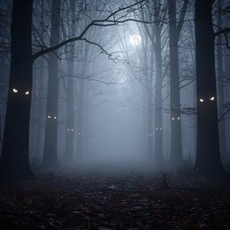

Horror is a genre designed to create feelings of fear, suspense, mystery, or uneasiness.

Supernatural horror involves ghosts, curses, supernatural creatures, or unexplained events.
Psychological horror focuses on fear, uncertainty, and the thoughts and perceptions of characters.
Cosmic horror focuses on mysterious forces or beings that are beyond human understanding.